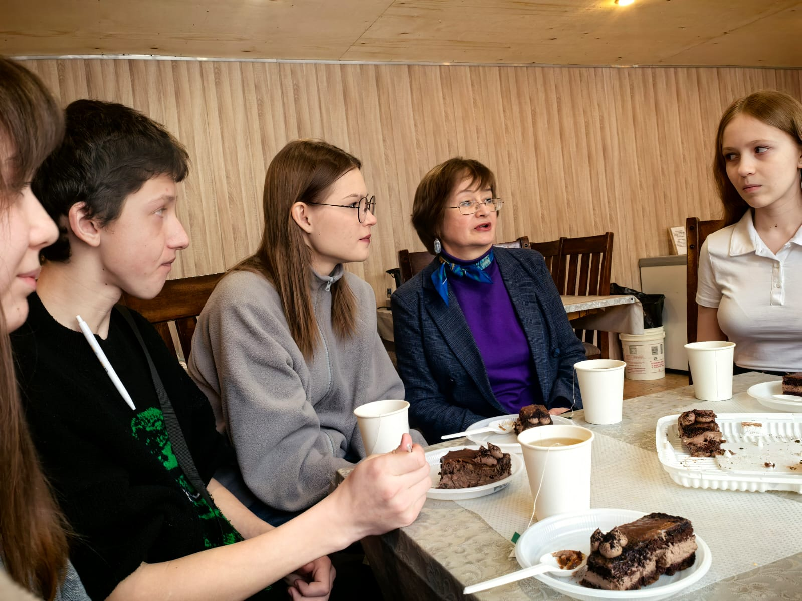
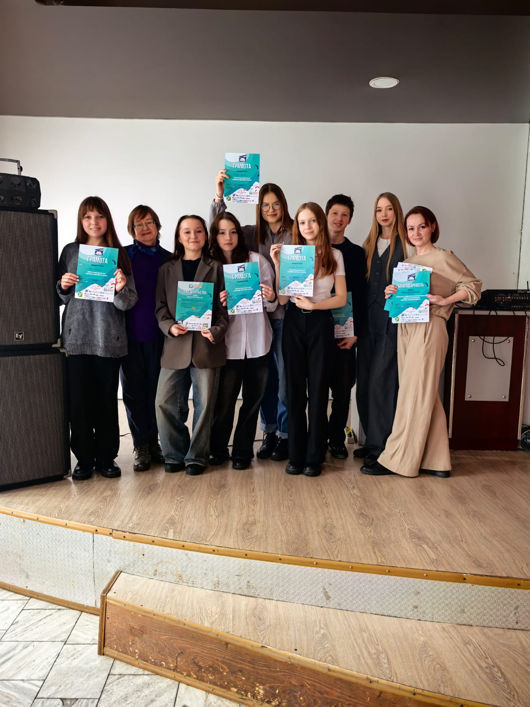
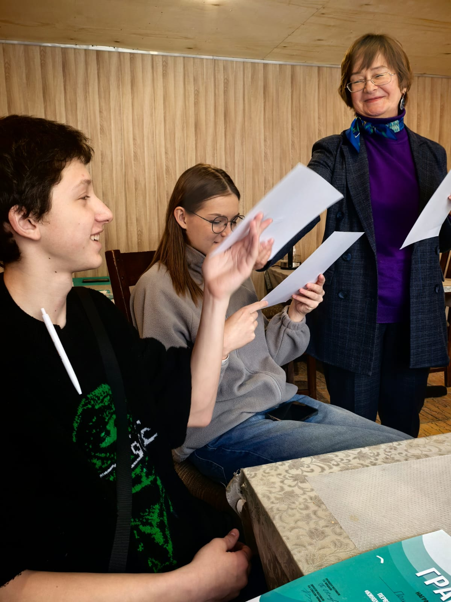

Фильм-отчёт, посвящённый десятилетию фестиваля "Северный десант"
Краткая хроника
Апрель

В Телеграм в чате «КИНОсценарии КиноХоровода» началось обсуждение
сценариев, подготовленных по теме фестиваля «Наследники Победы».
Несколько уже выложены: «Ванятка» команды Братского района «Первые»,
куратор Александра Маратовна Прудникова; два сценария Нижнеилимского
района: «Советы Янгеля» п. Шестаково, куратор Татьяна Андреевна Дулько
и «Урок Макарыча» команды «Рафаелло» р.п. Новая Игирма, куратор Ирина
Викторовна Булгакова; «Спасибо деду за Победу» команды «УКино Студия»
Усть-Кутского района, куратор Роман Викторович Моор и др.
Всего заявлено 15 сценариев. Присоединяемся к обсуждению!
Всего заявлено 15 сценариев. Присоединяемся к обсуждению!
Март

В конце марта президент фестиваля Татьяна Николаевна Жиндаева побывала
в некоторых районах - участниках фестиваля кино для детей.
В г. Братске она встретилась с кинохороводовцами во главе с кураторами: старым - Еленой Вадимовной Ганеевой и новым – Валерией Кирилловной Пичуговой. Общение прошло в теплой, доверительной обстановке, за чаем и пирожными. Ребята рассказали о том, как готовятся к новому сезону, теме своего сценария, составе команды, задали вопросы о предстоящем фестивале.
Татьяна Николаевна подробно познакомила с графиком и программой «КиноХоровода-25», вручила свидетельства об окончании сценарного курса «Пишем своё кино» и грамоты за участие в фестивале 2024 г. «Герои БАМа».
- Очень нравится боевой настрой «Братчан». Как всегда, здесь заводила и лидер Яна Скулина. Активно работают над сценарием «Учительница». Раскрывать тему не буду, но она однозначно очень интересная и актуальная – о человечности и доброте. Познакомилась с новым куратором команды – Валерией Кирилловной Пичуговой. Она молода, юна, но у неё за плечами много общественных мероприятий и дел, участие и победы в различных конкурсах и номинациях, креативна, талантлива. А нам такие активные люди на «КиноХороводе» очень нужны! Тем более её рекомендует Елена Вадимовна, ей я полностью доверяю, - подвела итоги встречи с братчанами Т.Н. Жиндаева.
Также обсуждение вопросов подготовки фестиваля с руководителями районов и работниками культуры состоялось в Казачинско-Ленском и Усть- Кутском районах.
В этом году в пятый раз начала свою работу детская школа «Мобилография», которая учит детвору делать профессиональные снимки с мобильного телефона. Она действует в рамках культурного проекта «Северный десант» под патронажем генерального партнера десанта АО «ИНК-Капитал».
- В этом году наши участники будут постигать не только премудрости фотографирования с мобильного телефона, но и познакомятся с секретами видеосъемки, - делится планами автор и руководитель школы, профессиональный фотохудожник Гюнай Расимовна Мусаева.
В современном мире интернета, соцсетей, блогерства знание этих двух дисциплин – фотографии, видео – становится ключевым для успешной деятельности в этой сфере. И, безусловно, вызывает живой интерес у детей и подростков, а также их родителей. Напоминаем, что свои занятия данная онлайн-школа проводит по субботам-воскресеньям на безоплатной основе для школьников от 7 до 17 лет Иркутской области. Более подробную информацию можно узнать по телефону 89124976543.
В г. Братске она встретилась с кинохороводовцами во главе с кураторами: старым - Еленой Вадимовной Ганеевой и новым – Валерией Кирилловной Пичуговой. Общение прошло в теплой, доверительной обстановке, за чаем и пирожными. Ребята рассказали о том, как готовятся к новому сезону, теме своего сценария, составе команды, задали вопросы о предстоящем фестивале.
Татьяна Николаевна подробно познакомила с графиком и программой «КиноХоровода-25», вручила свидетельства об окончании сценарного курса «Пишем своё кино» и грамоты за участие в фестивале 2024 г. «Герои БАМа».
- Очень нравится боевой настрой «Братчан». Как всегда, здесь заводила и лидер Яна Скулина. Активно работают над сценарием «Учительница». Раскрывать тему не буду, но она однозначно очень интересная и актуальная – о человечности и доброте. Познакомилась с новым куратором команды – Валерией Кирилловной Пичуговой. Она молода, юна, но у неё за плечами много общественных мероприятий и дел, участие и победы в различных конкурсах и номинациях, креативна, талантлива. А нам такие активные люди на «КиноХороводе» очень нужны! Тем более её рекомендует Елена Вадимовна, ей я полностью доверяю, - подвела итоги встречи с братчанами Т.Н. Жиндаева.
Также обсуждение вопросов подготовки фестиваля с руководителями районов и работниками культуры состоялось в Казачинско-Ленском и Усть- Кутском районах.
В этом году в пятый раз начала свою работу детская школа «Мобилография», которая учит детвору делать профессиональные снимки с мобильного телефона. Она действует в рамках культурного проекта «Северный десант» под патронажем генерального партнера десанта АО «ИНК-Капитал».
- В этом году наши участники будут постигать не только премудрости фотографирования с мобильного телефона, но и познакомятся с секретами видеосъемки, - делится планами автор и руководитель школы, профессиональный фотохудожник Гюнай Расимовна Мусаева.
В современном мире интернета, соцсетей, блогерства знание этих двух дисциплин – фотографии, видео – становится ключевым для успешной деятельности в этой сфере. И, безусловно, вызывает живой интерес у детей и подростков, а также их родителей. Напоминаем, что свои занятия данная онлайн-школа проводит по субботам-воскресеньям на безоплатной основе для школьников от 7 до 17 лет Иркутской области. Более подробную информацию можно узнать по телефону 89124976543.
Февраль

По инициативе куратора команды Казачинско-Ленского района «Бамовята»
Елены Григорьевны Соколовой во время «Культурного творческого десанта»
в бамовские поселки Магистральный и Улькан показаны несколько фильмов
фестиваля кино для детей «КиноХоровод. Герои БАМа». Фильмы фестиваля
представляли его участники – «бамовята». Зал просмотрел детские
«короткометражки» на одном дыхании.
Реакция зрителей, по словам Елены Григорьевны, была однозначно позитивной: «Неужели это наши ребятишки сняли? Какие молодцы!», «Надо же, такие фильмы: интересные, живые, настоящие», «Самое главное – сделали дети. Просто таланты!»...
Начал работу первый блок обучающего подготовительного этапа фестиваля – основа и исток любого фильма – сценарный курс «Пишем своё кино». Как отмечает его автор и руководитель, главный сценарист фестиваля, режиссёр, заслуженный журналист Молдовы Анна Харлампиевна Харламенко, нынче он имеет свои особенности: «Во-первых, мы разделили участников на две группы – второкурсники, ребята, которые уже писали сценарии в прошлом году по теме «Герои БАМа»; и первокурсники, решившие попробовать свои творческие силы в теме «Наследники Победы». Второе отличие – упор сделан на индивидуальную работу с каждым. Это, конечно, для меня, как преподавателя, намного сложнее, но, безусловно, эффективнее для обучающихся».
Порядка 100 детей изъявили желание пройти спецкурс сценарного мастерства «Пишем своё кино». Он продлится до конца апреля и завершится питчингом - презентацией участниками сценариев. Дальше юные кинемотографисты приступят к подготовке своих работ к съёмочному процессу. Этим они займутся в апреле-мае на следующем курсе - режиссуры «Камера: мотор!», который представит его автор и руководитель, главный режиссер фестиваля, журналист Юлия Анатольевна Горбачевская.
Заключительный, третий курс в обучающей программе «КиноХоровода», проведет в мае-июне технический директор фестиваля, инженер, видеограф Марат Искандарович Абдурашитов. Он называется «Салют, Киноделы!» и посвящен операторскому и монтажёрскому производству.
Реакция зрителей, по словам Елены Григорьевны, была однозначно позитивной: «Неужели это наши ребятишки сняли? Какие молодцы!», «Надо же, такие фильмы: интересные, живые, настоящие», «Самое главное – сделали дети. Просто таланты!»...
Начал работу первый блок обучающего подготовительного этапа фестиваля – основа и исток любого фильма – сценарный курс «Пишем своё кино». Как отмечает его автор и руководитель, главный сценарист фестиваля, режиссёр, заслуженный журналист Молдовы Анна Харлампиевна Харламенко, нынче он имеет свои особенности: «Во-первых, мы разделили участников на две группы – второкурсники, ребята, которые уже писали сценарии в прошлом году по теме «Герои БАМа»; и первокурсники, решившие попробовать свои творческие силы в теме «Наследники Победы». Второе отличие – упор сделан на индивидуальную работу с каждым. Это, конечно, для меня, как преподавателя, намного сложнее, но, безусловно, эффективнее для обучающихся».
Порядка 100 детей изъявили желание пройти спецкурс сценарного мастерства «Пишем своё кино». Он продлится до конца апреля и завершится питчингом - презентацией участниками сценариев. Дальше юные кинемотографисты приступят к подготовке своих работ к съёмочному процессу. Этим они займутся в апреле-мае на следующем курсе - режиссуры «Камера: мотор!», который представит его автор и руководитель, главный режиссер фестиваля, журналист Юлия Анатольевна Горбачевская.
Заключительный, третий курс в обучающей программе «КиноХоровода», проведет в мае-июне технический директор фестиваля, инженер, видеограф Марат Искандарович Абдурашитов. Он называется «Салют, Киноделы!» и посвящен операторскому и монтажёрскому производству.
Ученики Зябинской школы в детском кинофестивале "Кинохоровод»

Ученики Зябинской школы готовятся участвовать в детском кинофестивале "Кинохоровод»
В этом году фестиваль «Кинохоровод. Внуки войны» посвящён 80-летию Великой Победы.
Творческие команды встретятся в городе Усть-Куте во время летних каникул. Сейчас
ребята и куратор команды Зябинской СОШ Александра Прудникова приступили к написанию
сценария своего нового фильма.
📽️Напомним, что летом 2024 года команда ребята из Братского района приняла участие в Первом фестивале "Кинохоровод. Герои БАМа". Ученики Зябинской СОШ написали сценарий, прошли конкурсный отбор, сняли короткометражный фильм "Письма двух сердец" и стали победителями в номинации "Самая романтическая кинопара". В апреле ожидается, что долгожданный фильм, снятый юными сценаристами из посёлка Зяба, увидят зрители.
📽️Напомним, что летом 2024 года команда ребята из Братского района приняла участие в Первом фестивале "Кинохоровод. Герои БАМа". Ученики Зябинской СОШ написали сценарий, прошли конкурсный отбор, сняли короткометражный фильм "Письма двух сердец" и стали победителями в номинации "Самая романтическая кинопара". В апреле ожидается, что долгожданный фильм, снятый юными сценаристами из посёлка Зяба, увидят зрители.
"КиноХоровод. Наследники Победы" Подготовка в самом разгаре
ДАТЫ ПРОВЕДЕНИЯ:
25 июня – 15 июля 2025 года.ПОСВЯЩЕНИЕ:
80-летию Великой Победы, Году защитника Отечества, 25-летию ООО «ИНК», а также юбилеям населённых пунктов: 60-летию г. Железногорск - Илимский, 250-летию г. Киренск и 380-летию с. Макарово.О ПРОЕКТЕ
Культурный проект «Северный десант» и его кинематографическое событие – Фестиваль кино для детей «КиноХоровод. Наследники Победы» – это уникальная инициатива, объединяющая артистов, музыкантов и деятелей культуры для творческих встреч с жителями отдалённых сибирских поселений и развития талантов юных сибиряков. Это ежегодное событие, несущее высокое искусство, диалог сердец и праздник творчества через творческие встречи, концерты, спектакли, мастер-классы, кинопоказы и благотворительные акции. Проект, длящийся уже 11-й год, поддерживает развитие культуры Прибайкалья и организует детский фестиваль «КиноХоровод».
ЦЕЛИ И ЗАДАЧИ «СЕВЕРНОГО ДЕСАНТА»
Популяризация творчества: привнесение высокого искусства в отдалённые сибирские территории.
Культурное объединение: сближение деятелей культуры и местных жителей через творческий диалог.
Социальная поддержка: повышение качества жизни сибиряков через доступ к культурным мероприятиям.
Развитие Прибайкалья: содействие социально-культурному прогрессу региона.
Поддержка детей: организация онлайн-фотошколы «Мобилография» и кинофестиваля с большой обучающей кинематографической программой.
Проведение мероприятий: организация безвозмездных творческих встреч, концертов, спектаклей, кинопоказов, выставок и мастер-классов.
Вовлечение аудитории: создание диалоговых площадок для общения артистов и зрителей.
Расширение программы: внедрение новых идей, таких как онлайн-школы и мастер-классы по актуальным направлениям (блогерство, семейная мемуаристика, нейросети, кинопедагогика), благотворительные акции.
Привлечение партнёров: сотрудничество с новыми и постоянными спонсорами для реализации проектов.
Знакомство с регионом: продвижение культурного обмена между кинематографистами и сибирским краем.
Ценности: Воспитание патриотизма и уважения к родному языку и летописи отчего дома через искусство – фото, кино, выставки... Развитие творческого потенциала детей и молодёжи.
МАРШРУТ
Фестиваль охватит 15 населённых пунктов Иркутской области:
Янталь (30.06),
ИЗП (01.07),
Новая Игирма (02.07),
Железногорск-Илимский и Коршуновский (03.07),
Усть-Кут (04.07),
Яракта (05.07),
Верхнемарково (06.07),
Ния и Звёздный (07.07),
Казачинское (08.07),
Макарово (09.07),
Киренск (10-11.07),
Иркутск (12-13.07),
Качуг и Ангарск (14-15.07).
ПРОГРАММА
“Северный десант” (СД):
Творческие встречи с актёрами, мастер-классы по актёрскому искусству, нейросети и мобилографии, фотовыставка, осмысленные кинопросмотры, пресс-конференции, фотосессии.
Детский фестиваль “КиноХоровод” (ДКХ):
Съёмки короткометражных художественных фильмов детьми при наставничестве профессиональных сценаристов, режиссёров, актёров, музыкантов, операторов, педагогов-кураторов.
Семейный киноклуб
Осмысленные кинопоказы патриотических фильмов из советской и российской классики с обсуждением: «Сын полка» (1946), «Женя, Женечка и «Катюша» (1967), «На войне, как на войне» (1968), «Подранки» (1976), «Солдат и слон» (1977), «Ожидание полковника Шалыгина» (1981), «В бой идут одни старики» (1987), «Знаешь, мама, где я был» (2017), «Солдатик» (2018), «Сестрёнка» (2019).
Фотовыставка «Мобилография»
Презентация лучших работ участников фотошколы. Конкурс фото на приз зрительских симпатий.
Экскурсии и благотворительные акции
Посещение местных достопримечательностей, музеев, буровых и детских домов.
УЧАСТНИКИ
“Северный десант» - команда из 9 профессионалов.
Актёры:
СЕРГЕЙ АПРЕЛЬСКИЙ – актёр театра и кино, режиссёр, сценарист (131 кинопроект).
АЛЕКСЕЙ АНИКИН – актёр театра и кино, режиссёр, сценарист (116 кинопроектов).
МИХАИЛ ХИМИЧЕВ – актёр театра и кино (80 кинопроектов).
ЛЮДМИЛА ТУКАН – заслуженная артистка Гагаузии (Молдова), певица, поэтесса, композитор, лауреат международных конкурсов.
Орг. группа:
Татьяна ЖИНДАЕВА, автор и руководитель проекта.
Анна ХАРЛАМЕНКО – пресс-секретарь.
Ирина ГОРКУНОВА – кинопедагог, актриса театра и кино.
Дмитрий КАЗАНЦЕВ - звукорежиссёр.
Марат АБДУРАШИТОВ – видеограф.
КЛЮЧЕВЫЕ СОБЫТИЯ
«КиноХоровод»
25 июня – 5 июля, Усть-Кут, II Фестиваль кино для детей «КиноХоровод. Наследники Победы»: мастер-классы, съёмки фильмов, кинопоказы, экскурсии, песенные хороводы, вечера знакомств.
27 июня – церемония открытия фестиваля с участием актёров-десантников.
3 июля – конкурс детских короткометражных фильмов по теме «Наследники Победы».
4 июля - церемония закрытия «КиноХоровода» с показом детских фильмов – победителей конкурса и участием актёров-десантников
«Северный десант»
30 июня – 15 июля: творческие встречи, фотосессии, кинопоказы, мастер-классы и фотовыставка - по маршруту десанта.
НЕМНОГО ИСТОРИИ
Проект родился в 2014 году, как альтернатива или продолжение действовавшего в годы БАМа фестиваля " Огни магистрали".
Когда строилась Байкало-Амурская магистраль, туда постоянно приезжали известные певцы, актеры, поэты, писатели и даже был свой ежегодный фестиваль. Потом всё "замерло" из-за смены государственности, дальней географии, сурового климата, бездорожья, дороговизны, ушедших традиций...
Энтузиасты и спонсоры при поддержке местных властей сотворили чудо - придумали новый, постоянно действующий культурный проект "Северный десант". И ему уже 11 лет!
За это время десантники выступили в 28 населённых пунктах; своим талантом поделились 32 известных актёра театра и кино; проведено более 330 мероприятий; задействовано 85 тысяч зрителей, преодолено почти 30 000 километров сложных сибирских дорог.
ПАРТНЕРЫ И ПОМОЩНИКИ
Все годы проект активно поддерживают Правительство и Законодательное собрание Иркутской области, администрации Усть-Кутского, Нижнеилимского, Киренского, Катангского, Качугского районов Прибайкалья, Ленского и Мирнинского наслегов Республики Саха. Десант реализуется на столь обширных территориях Севера России благодаря помощи бизнес-сообщества: ООО «СИБНА», АО «Труд», АО «Международный аэропорт «Иркутск», ООО «Киренский речной порт», ООО «ТМИН» и других во главе с главным единомышленником и соорганизатором проекта - генеральным партнером АО "ИНК - Капитал" и Иркутской нефтяной компанией. Информационную составляющую обеспечивают: ВГТРК/ИГТРК, ОГАУ «Медиа-центр «Прибайкалье» (газета «Областная» и ТК АИСТ), ТИВИСИ, НТС, ТРК «Диалог», Ленские вести, ИА «Телеинформ» и др.
ПРИСОЕДИНЯЙТЕСЬ к «Северному Десанту» и «КиноХороводу» – станьте частью большого культурного праздника, посвящённого Победе и творчеству!